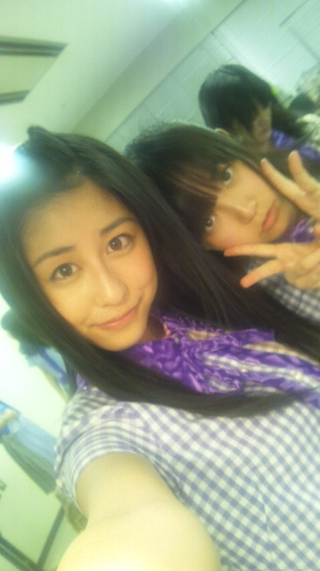
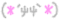
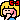

| 2012/02 15 Wed | るんるんすぎる！♪( ｏ・ω・) ノ)) |

昨日、今日と学校のテストがあったので
更新遅れました…(T^T)
ごめんね？
許して？(´・ω・｀)
サブバックがぱんぱんな女子高生をあたたかいめ
で見守っていたちはるです。
ええなぁ

微笑ましいなぁ

こんばんるんー
昨日はっ
年に１度の大イベントっ
はっぴーばれんたいーんっ!!

いえーい！

なのにも関わらず
学校ではテスト真っ盛り(|| ゜Д゜)
だったから
全然友チョコ交換できなくて寂しかったー……
だからテスト終わった今日にチョコ作って明日渡そうかなぁー
って思ってたんだけどね
あいにく明日お仕事があって学校行けないのょ…(；´д⊂)
タイミング悪し！
おぅ…°・(ノД`)・°・
あげたいのにー
いつあげようか悩みちゅう。
(´-ω-`)
うーん
いつがいっかなぁー
うーん
(´-ω-`)
それとっ
乃木坂でチョコ交換したのー(
*
´∀`)♪
アイドルから手作りチョコもらうなんてー

やばーい！( ´艸｀)うひ
楽しい美味しいバレンタインになりました(*^ω^*)ノ
あっ
写メ！
なんですが写真を撮り忘れてしまって……(涙
ほんとm(__)m
ごめんなさいっ
また作れたら作ってみるー
待っててくれる人ー！はーい！
はい調子のったー。←
今日も元気にー？
頑張るんるんっ
ってもう夜10時。
うん！
………気にしないっ(ゝω・´
★
)
ばいー

最近ひめたんに「るんるん」って呼ばれる( ´艸｀)
んもうっ
可愛いんだから
ちはるん
コメント(43)
2012/02/15 18:51